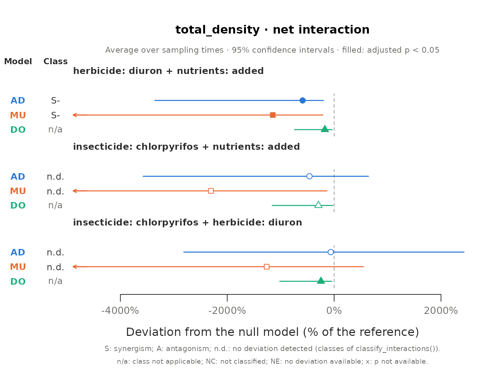
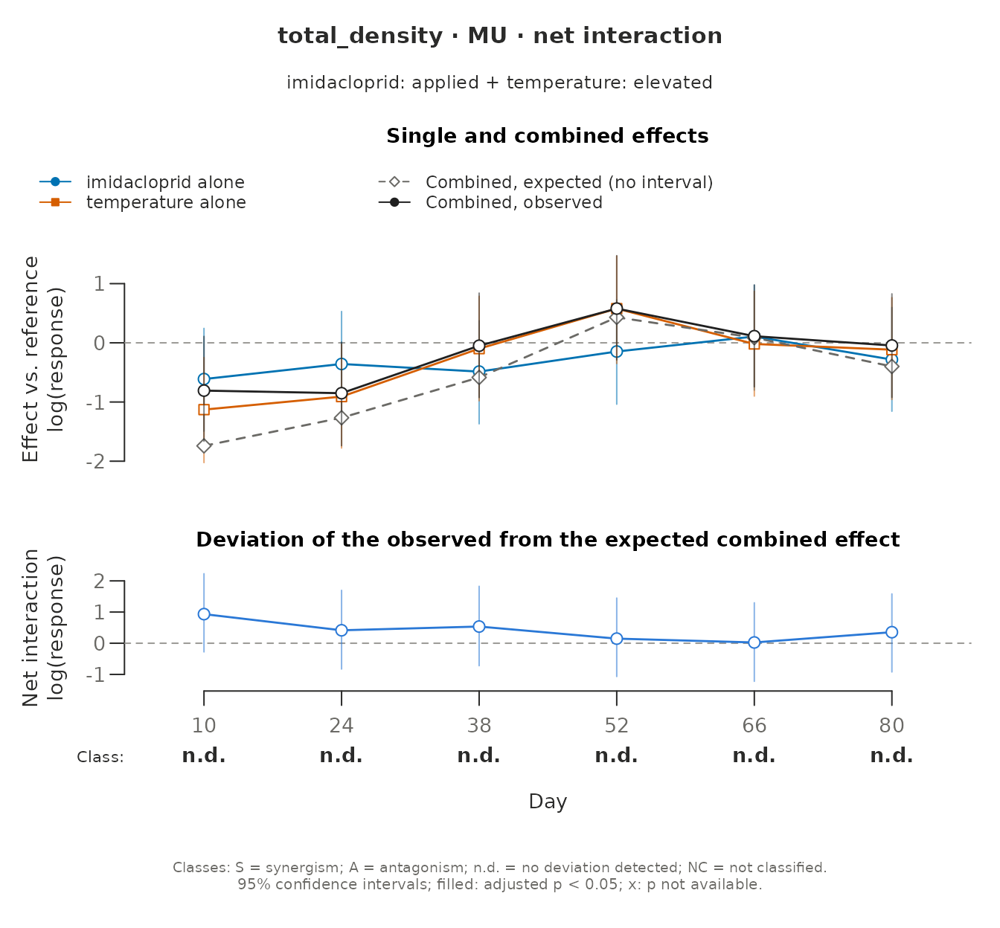
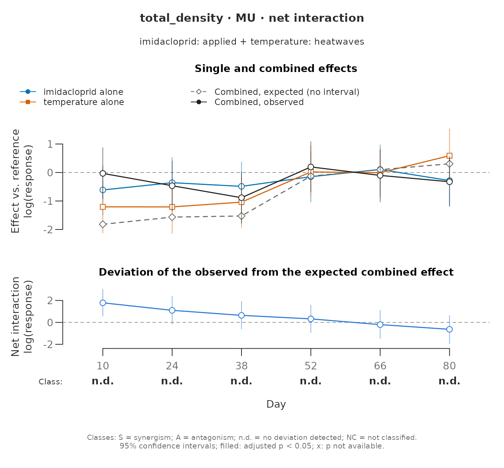

This article applies the whole workflow of must, from the design to
the methods paragraph, to two outdoor mesocosm experiments whose data
come with the package: Polazzo & Rico (2021), with an insecticide, a
herbicide and nutrient enrichment, and Hermann et al. (2024), with an
insecticide and three temperature regimes. vignette("must")
explains each step; here the emphasis is on the choices that each data
set asks for and on how to read the results. The analyses illustrate the
package and do not replace those of the original articles.
Each analysis follows the same steps:
-
describe_design(): what the design identifies, with the samplings taken before the stressors were applied declared inbaseline. -
fit_responses(): one model per response, with its error distribution chosen for the data. -
suggest_null_models(): the null models that the guidelines of Schäfer & Piggott (2018) give for what is known about the stressors and for the effects of each stressor alone, estimated from the model. -
estimate_interactions(),classify_interactions()andcompare_null_models(): the interactions, their classes and whether the null models agree on them. -
report_interactions(): the methods and the table of decisions.
What suggest_null_models() needs to know about the
stressors is the same in both experiments. The stressors do not act
similarly, and one of them acts specifically on physiology: chlorpyrifos
(an inhibitor of acetylcholinesterase) and diuron (an inhibitor of
photosystem II) in the first experiment, imidacloprid (which binds to
the nicotinic acetylcholine receptors of insects) in the second. The
responses are densities, counts and a loss of mass, not mortality, and
with a single concentration of each pesticide the stressor-effect
relationships are not known. How the sensitivities to the stressors are
distributed and correlated is not known either: those criteria are left
unknown, so that every value is tried.
library(must)
suggest <- function(fit) {
suggest_null_models(fit, similar_action = FALSE, specific_action = TRUE,
mortality = FALSE, stressor_effect = FALSE)
}The residual checks of fit_responses() are switched off
(residual_checks = FALSE) only so that this article runs
without the DHARMa package; in an analysis, keep the default.
Insecticide, herbicide and nutrients
Polazzo & Rico (2021) used 24 outdoor mesocosms, three per combination of a full factorial of chlorpyrifos (1 µg/L, or absent), diuron (18 µg/L, or absent) and nutrients (nitrogen and phosphorus added twice a week, or ambient). The nutrient additions started four weeks before the pesticides were applied, on day 0.
stressors <- c("insecticide", "herbicide", "nutrients")
control <- c(insecticide = "absent", herbicide = "absent", nutrients = "ambient")Phytoplankton
polazzo_phytoplankton has the density of each taxon and
their total on days -5, 7, 15 and 50. Day -5 precedes the pesticides but
not the nutrients, so it is a baseline for the pesticides only. Declared
per stressor in baseline, it stays in the model, and no
interaction that involves a pesticide is tested on it.
phyto_design <- describe_design(polazzo_phytoplankton, stressors, control,
unit = "mesocosm", time = "day",
baseline = list(insecticide = -5, herbicide = -5))
phyto_design$sets[, c("set_id", "stressors", "net_identifiable", "pure_identifiable")]
#> set_id stressors net_identifiable pure_identifiable
#> 1 S01 herbicide x nutrients TRUE NA
#> 2 S02 insecticide x nutrients TRUE NA
#> 3 S03 insecticide x herbicide TRUE NA
#> 4 S04 insecticide x herbicide x nutrients TRUE TRUEThe full factorial identifies the three pairwise interactions and the
three-way one, whose pure interaction can be separated from the pairwise
ones. The densities are whole numbers, which
fit_responses() would take for counts; as densities, counts
scaled to a volume (the source does not give the unit), they are
declared continuous in response_types.
phyto_fit <- fit_responses(polazzo_phytoplankton, "total_density", phyto_design,
response_types = c(total_density = "continuous"),
residual_checks = FALSE, seed = 1, quiet = TRUE)
phyto_fit
#> <must_fit> 1 response(s); time structure: interaction; dispersion: common; random effects: (1 | .unit)
#> Residual checks: not run; seed: 1
#> total_density: gamma_log (log link; continuous, declared), AIC 1740.6, n = 96, missing = 0, residual checks: not run; random effects: none
phyto_fit$fits$total_density$reason
#> [1] "The random intercept(s) for '.unit' had variance estimated at zero and were removed from the selected model (same maximum likelihood)."A Gamma model with a log link fits best. The variance of its random intercept per mesocosm was estimated at zero, and the intercept was removed.
phyto_choice <- suggest(phyto_fit)
phyto_choice$null_models
#> [1] "AD" "MU" "DO"
table(phyto_choice$sets$type, phyto_choice$sets$time)
#>
#> 15 50 7
#> all neutral 0 1 1
#> double neutral 1 3 3
#> positive neutral 3 0 0The guidelines leave the three null models of Madge Pimentel et al. (2025): simple addition (AD), the multiplicative model (MU) and dominance (DO). The stress addition model needs mortality as the effect, concentration addition stressors that act similarly, and dominance stays because the correlation of the sensitivities is unknown. In most sets and days the single effects are too uncertain to have a direction (types of Piggott et al. 2015); on day 15 the insecticide alone increased the phytoplankton.
phyto_est <- estimate_interactions(phyto_fit, null_models = phyto_choice, n_sim = 4000,
seed = 2021)
e <- phyto_est$estimates
# Effects of each stressor alone, as multiples of the control density
single <- e[e$order == 3L & e$component == "single" & e$null_model == "MU",
c("time", "stressor", "estimate", "lower", "upper", "p_adjusted")]
single[c("estimate", "lower", "upper")] <- round(exp(single[c("estimate", "lower", "upper")]), 1)
single$p_adjusted <- signif(single$p_adjusted, 2)
single
#> time stressor estimate lower upper p_adjusted
#> 115 7 insecticide 7.0 1.1 48.7 0.0620
#> 116 7 herbicide 3.0 0.4 19.8 0.2400
#> 117 7 nutrients 7.0 0.9 50.4 0.1800
#> 128 15 insecticide 8.0 1.2 56.3 0.0620
#> 129 15 herbicide 3.0 0.5 21.0 0.2400
#> 130 15 nutrients 3.8 0.5 25.5 0.2400
#> 141 50 insecticide 3.8 0.5 27.7 0.1700
#> 142 50 herbicide 4.7 0.6 32.6 0.2400
#> 143 50 nutrients 0.8 0.1 5.3 0.7800
#> 154 overall insecticide 6.0 2.0 18.2 0.0025
#> 155 overall herbicide 3.5 1.1 10.7 0.0280
#> 156 overall nutrients 2.8 0.9 8.3 0.0800
summary(phyto_est)
#> Interactions: Krinsky-Robb simulation; small-sample correction; adjusted p-values (BH) below 0.05
#> Deviating / tested interactions by sampling time:
#> response model estimand 7 15 50 overall
#> total_density AD net 0/4 0/4 0/4 1/4
#> total_density MU net 0/4 0/4 0/4 1/4
#> total_density DO net 0/3 0/3 0/3 2/3
#> total_density AD pure 1/1 0/1 1/1 1/1
#> total_density MU pure 1/1 1/1 1/1 1/1
#>
#> Classes of the net deviations (Piggott et al. 2015) by sampling time:
#> response model 7 15 50 overall
#> total_density AD 4 AD 4 AD 4 AD 3 AD, 1 -S
#> total_density MU 4 AD 4 AD 4 AD 3 AD, 1 -S
#>
#> Agreement between null models (AD, MU, DO), robust/model-dependent/conflicting/none:
#> response estimand 7 15 50 overall
#> total_density net 0/0/0/4 0/0/0/4 0/0/0/4 1/1/0/2
#> total_density pure 1/0/0/0 0/1/0/0 1/0/0/0 1/0/0/0
#>
#> Counts of boundary tests and of rows not estimated: `$interactions`; classes: `$classes`.On single days none of these effects is significant once the p-values are adjusted across sets and days, but averaged over the samplings the insecticide alone multiplied the phytoplankton by 6 and the herbicide alone by 3.5. Few interactions deviate from the null models, mostly in the averages over time:
phyto_agreement <- compare_null_models(phyto_est)
phyto_agreement[phyto_agreement$agreement %in% c("robust", "model_dependent", "conflicting"),
c("time", "stressors", "estimand", "AD", "MU", "DO", "agreement")]
#> time stressors estimand AD MU DO
#> 4 overall herbicide x nutrients net - - -
#> 12 overall insecticide x herbicide net 0 0 -
#> 14 7 insecticide x herbicide x nutrients pure + + <NA>
#> 16 15 insecticide x herbicide x nutrients pure 0 + <NA>
#> 18 50 insecticide x herbicide x nutrients pure + + <NA>
#> 20 overall insecticide x herbicide x nutrients pure + + <NA>
#> agreement
#> 4 robust
#> 12 model_dependent
#> 14 robust
#> 16 model_dependent
#> 18 robust
#> 20 robust
phyto_classes <- classify_interactions(phyto_est)
phyto_classes[phyto_classes$time == "overall" & phyto_classes$null_model != "DO",
c("stressors", "null_model", "single_codes", "code_interaction", "class")]
#> stressors null_model
#> 10 herbicide x nutrients AD
#> 11 herbicide x nutrients MU
#> 22 insecticide x nutrients AD
#> 23 insecticide x nutrients MU
#> 34 insecticide x herbicide AD
#> 35 insecticide x herbicide MU
#> 46 insecticide x herbicide x nutrients AD
#> 47 insecticide x herbicide x nutrients MU
#> single_codes code_interaction class
#> 10 herbicide +; nutrients 0 -- -S
#> 11 herbicide +; nutrients 0 -- -S
#> 22 insecticide +; nutrients 0 0 AD
#> 23 insecticide +; nutrients 0 0 AD
#> 34 insecticide +; herbicide + 0 AD
#> 35 insecticide +; herbicide + 0 AD
#> 46 insecticide +; herbicide +; nutrients 0 0 AD
#> 47 insecticide +; herbicide +; nutrients 0 0 ADplot() with type = "models" draws them
under each null model, as deviations relative to the control; here the
three pairs averaged over the samplings (the three stressors together,
whose bloom dwarfs them, are left out):
pairs <- unique(e$set_id[e$order == 2L])
plot(phyto_est, type = "models", time = "overall", set_id = pairs)
The mean densities explain them:
after <- polazzo_phytoplankton[polazzo_phytoplankton$day > 0, ]
treatment <- paste(after$insecticide, after$herbicide, after$nutrients, sep = " / ")
phyto_means <- round(tapply(after$total_density, list(treatment, after$day), mean))
phyto_means
#> 7 15 50
#> absent / absent / added 3308 2127 1302
#> absent / absent / ambient 471 555 1679
#> absent / diuron / added 501 115 549
#> absent / diuron / ambient 1413 1642 7855
#> chlorpyrifos / absent / added 2283 4405 1329
#> chlorpyrifos / absent / ambient 3297 4438 6365
#> chlorpyrifos / diuron / added 63345 25668 1655
#> chlorpyrifos / diuron / ambient 3224 9617 608-
Herbicide and nutrients. Diuron alone increased the
phytoplankton, nutrients alone did not change it on average, and
together they kept it at or below the density of the controls. Averaged
over the samplings, every null model flags this deviation
(
robust), and the classes call it a negative synergism (−S) under AD and MU. -
The two pesticides. Only dominance flags their
interaction (
model_dependent): whether it deviates depends on the mechanism assumed, and the guidelines leave that open because the correlation of the sensitivities is unknown. - The three stressors. Their net deviation is not significant, but the pure three-way interaction is positive under AD and MU: with the three stressors together the phytoplankton bloomed (on day 7, 19 times the density with nutrients alone) beyond what the pairwise interactions explain.
Macroinvertebrates
polazzo_macroinvertebrates counts the individuals of
each taxon on days -32, 15, 30 and 50. Day -32 precedes every stressor,
so it is a common baseline. Besides the total, the analysis follows
Cloeon, a mayfly, an insect group sensitive to organophosphate
insecticides such as chlorpyrifos.
macro_design <- describe_design(polazzo_macroinvertebrates, stressors, control,
unit = "mesocosm", time = "day", baseline = -32)
macro_fit <- fit_responses(polazzo_macroinvertebrates, c("total_abundance", "cloeon"),
macro_design, residual_checks = FALSE, seed = 1, quiet = TRUE)
macro_fit
#> <must_fit> 2 response(s); time structure: interaction; dispersion: common; random effects: (1 | .unit)
#> Residual checks: not run; seed: 1
#> total_abundance: nbinom2 (log link; count, detected), AIC 1200.4, n = 95, missing = 1, residual checks: not run
#> cloeon: nbinom2 (log link; count, detected), AIC 769.2, n = 96, missing = 0, residual checks: not run; random effects: noneBoth are counts, and the negative binomial fits both; the total of one sample is missing in the source and that sample is left out. The guidelines leave the same three null models:
macro_choice <- suggest(macro_fit)
macro_choice$null_models
#> [1] "AD" "MU" "DO"
macro_est <- estimate_interactions(macro_fit, null_models = macro_choice, n_sim = 4000,
seed = 2021)
summary(macro_est)
#> Interactions: Krinsky-Robb simulation; small-sample correction; adjusted p-values (BH) below 0.05
#> Deviating / tested interactions by sampling time:
#> response model estimand 15 30 50 overall
#> total_abundance AD net 0/4 0/4 0/4 0/4
#> total_abundance MU net 0/4 0/4 0/4 0/4
#> total_abundance DO net 0/3 0/3 0/3 0/3
#> total_abundance AD pure 0/1 0/1 0/1 0/1
#> total_abundance MU pure 0/1 0/1 0/1 0/1
#> cloeon AD net 0/1 0/4 0/4 0/1
#> cloeon MU net 0/1 0/4 0/4 0/1
#> cloeon DO net 0/1 0/3 0/3 0/1
#> cloeon AD pure 0/0 0/1 0/1 0/0
#> cloeon MU pure 0/0 0/1 0/1 0/0
#>
#> Classes of the net deviations (Piggott et al. 2015) by sampling time:
#> response model 15 30 50 overall
#> total_abundance AD 4 AD 4 AD 4 AD 4 AD
#> total_abundance MU 4 AD 4 AD 4 AD 4 AD
#> cloeon AD 1 AD 4 AD 4 AD 1 AD
#> cloeon MU 1 AD 4 AD 4 AD 1 AD
#>
#> Agreement between null models (AD, MU, DO), robust/model-dependent/conflicting/none:
#> response estimand 15 30 50 overall
#> total_abundance net 0/0/0/4 0/0/0/4 0/0/0/4 0/0/0/4
#> total_abundance pure 0/0/0/1 0/0/0/1 0/0/0/1 0/0/0/1
#> cloeon net 0/0/0/1 0/0/0/4 0/0/0/4 0/0/0/1
#> cloeon pure 0/0/0/0 0/0/0/1 0/0/0/1 0/0/0/0
#>
#> Counts of boundary tests and of rows not estimated: `$interactions`; classes: `$classes`.The total, 39% of which are the snail Physella acuta, shows no effect and no interaction. Cloeon tells another story:
day15 <- polazzo_macroinvertebrates[polazzo_macroinvertebrates$day == 15, ]
with(day15, tapply(cloeon, list(insecticide, paste(herbicide, nutrients, sep = " / ")),
paste, collapse = ", "))
#> absent / added absent / ambient diuron / added diuron / ambient
#> absent "54, 97, 50" "4, 68, 35" "21, 84, 101" "27, 24, 37"
#> chlorpyrifos "0, 0, 0" "0, 0, 0" "0, 0, 1" "0, 0, 0"
e <- macro_est$estimates
e[e$response == "cloeon" & e$order == 3L & e$component == "single" & e$null_model == "AD",
c("time", "stressor", "estimate", "p_adjusted", "status")]
#> time stressor estimate p_adjusted status
#> 269 15 insecticide -35.666667 6.416802e-05 boundary
#> 270 15 herbicide -6.333333 7.710000e-01 ok
#> 271 15 nutrients 31.333333 4.995000e-01 ok
#> 282 30 insecticide -51.666667 2.317500e-01 ok
#> 283 30 herbicide -47.000000 6.255000e-01 ok
#> 284 30 nutrients -54.000000 3.075000e-01 ok
#> 295 50 insecticide -2.000000 8.875000e-01 ok
#> 296 50 herbicide -7.000000 7.710000e-01 ok
#> 297 50 nutrients 12.000000 4.995000e-01 ok
#> 308 overall insecticide NA NA not_estimable
#> 309 overall herbicide -20.111111 2.080000e-01 ok
#> 310 overall nutrients -3.555556 8.435000e-01 ok
with(e[e$response == "cloeon" & e$component == "interaction", ], table(status, time))
#> time
#> status 15 30 50 overall
#> not_defined 1 1 1 1
#> not_estimable 10 0 0 10
#> ok 3 13 13 3Two weeks after the application, chlorpyrifos had eliminated
Cloeon from every mesocosm but one. The effect of the
insecticide alone is then tested from the probability of observing only
zeros if Cloeon had kept the density of the controls
(status = "boundary"; adjusted p < 0.001). The
interactions that need the mesocosms with the insecticide alone cannot
be measured on that day (not_estimable): once a stressor
alone has eliminated the response, nothing is left on which the other
stressors could add or multiply. From day 30 the effect of the
insecticide is no longer detected, and no interaction is detected
either. A community total can hide the loss of its most sensitive
taxa.
Insecticide and heat
Hermann et al. (2024) used 24 outdoor mesocosms, four per combination of a 2 x 3 factorial: imidacloprid (nominal 1 µg/L, applied on days 0, 14 and 28, or absent) and temperature (ambient; elevated, 4 °C above ambient; or three heatwaves of 7 days, separated by 7 days at ambient temperature). The temperature treatments lasted until day 42, and the following six weeks were a recovery phase. The water temperature measured in the evening shows the heatwaves, on days 3, 17 and 31:
evening <- hermann_water_quality[hermann_water_quality$time_of_day == "evening", ]
round(tapply(evening$water_temperature, list(evening$temperature, evening$day), mean), 1)
#> -4 3 10 17 24 31 38 52 66 80
#> ambient 17 17.0 19.9 17.4 23.1 22.4 24.1 22.6 26.0 25.2
#> elevated 17 21.1 24.5 21.6 27.6 26.6 28.2 22.7 26.0 25.1
#> heatwaves 17 24.2 20.5 27.9 23.8 32.0 24.8 22.7 25.9 25.0Temperature has three levels, so the design gives two contrast sets: imidacloprid with elevated temperature and imidacloprid with heatwaves, each against ambient temperature.
h_stressors <- c("imidacloprid", "temperature")
h_control <- c(imidacloprid = "absent", temperature = "ambient")Zooplankton
hermann_zooplankton has the density of each taxon and
their total, sampled the day before the first application (day -1, a
baseline for both stressors) and every two weeks after it, a few days
after each heatwave during the heat phase.
zoo_design <- describe_design(hermann_zooplankton, h_stressors, h_control,
unit = "mesocosm", time = "day", baseline = -1)
zoo_design$sets[, c("set_id", "stressors", "levels")]
#> set_id stressors
#> 1 S01 imidacloprid x temperature
#> 2 S02 imidacloprid x temperature
#> levels
#> 1 imidacloprid=applied | temperature=elevated
#> 2 imidacloprid=applied | temperature=heatwaves
zoo_fit <- fit_responses(hermann_zooplankton, "total_density", zoo_design,
residual_checks = FALSE, seed = 1, quiet = TRUE)
zoo_fit
#> <must_fit> 1 response(s); time structure: interaction; dispersion: common; random effects: (1 | .unit)
#> Residual checks: not run; seed: 1
#> total_density: gamma_log (log link; continuous, detected), AIC 2287.3, n = 168, missing = 0, residual checks: not run
zoo_choice <- suggest(zoo_fit)
zoo_choice$null_models
#> [1] "AD" "MU" "DO"A non-significant interaction is not evidence of additivity. To ask
whether the combination follows a null model, a margin is declared, here
generously: deviations smaller than half the density of the reference
combination are taken as negligible (margin = 0.5; see
“Additive, or only not detected?” in vignette("must")).
zoo_est <- estimate_interactions(zoo_fit, null_models = zoo_choice, n_sim = 4000,
seed = 2024, margin = 0.5)
e <- zoo_est$estimates
# Effects of warming alone, as multiples of the density at ambient temperature
warming <- e[e$component == "single" & e$stressor %in% "temperature" &
e$null_model == "MU" & e$time != "overall",
c("time", "levels", "estimate", "lower", "upper", "p_adjusted")]
warming$levels <- sub(".*temperature=", "", warming$levels)
warming[c("estimate", "lower", "upper")] <- round(exp(warming[c("estimate", "lower", "upper")]), 2)
warming$p_adjusted <- signif(warming$p_adjusted, 2)
warming
#> time levels estimate lower upper p_adjusted
#> 6 10 elevated 0.32 0.13 0.78 0.058
#> 15 24 elevated 0.40 0.17 0.98 0.110
#> 24 38 elevated 0.91 0.38 2.19 1.000
#> 33 52 elevated 1.78 0.70 4.33 0.340
#> 42 66 elevated 0.98 0.41 2.39 1.000
#> 51 80 elevated 0.89 0.38 2.15 1.000
#> 69 10 heatwaves 0.30 0.12 0.74 0.058
#> 78 24 heatwaves 0.30 0.12 0.75 0.058
#> 87 38 heatwaves 0.35 0.14 0.86 0.064
#> 96 52 heatwaves 1.02 0.42 2.56 1.000
#> 105 66 heatwaves 0.99 0.41 2.36 1.000
#> 114 80 heatwaves 1.80 0.75 4.62 0.340The heatwaves reduced the zooplankton to about a third of its density at ambient temperature on the three samplings of the heat phase, and elevated temperature on the first two; after the heat phase the densities recovered. The intervals of those effects exclude no change, but their adjusted p-values are just above 0.05: intervals are not adjusted for the twelve sets and times, p-values are.
summary(zoo_est)
#> Interactions: Krinsky-Robb simulation; small-sample correction; adjusted p-values (BH) below 0.05
#> Deviating / tested interactions by sampling time:
#> response model estimand 10 24 38 52 66 80 overall
#> total_density AD net 0/2 0/2 0/2 0/2 0/2 0/2 0/2
#> total_density MU net 0/2 0/2 0/2 0/2 0/2 0/2 0/2
#> total_density DO net 0/2 0/2 0/2 0/2 0/2 0/2 0/2
#>
#> Classes of the net deviations (Piggott et al. 2015) by sampling time:
#> response model 10 24 38 52 66 80 overall
#> total_density AD 2 AD 2 AD 2 AD 2 AD 2 AD 2 AD 2 AD
#> total_density MU 2 AD 2 AD 2 AD 2 AD 2 AD 2 AD 2 AD
#>
#> Verdicts with an equivalence margin of +/-0.5 of the reference cell, deviation/negligible/equivalent/inconclusive:
#> response model estimand 10 24 38 52 66 80
#> total_density AD net 0/0/0/2 0/0/0/2 0/0/0/2 0/0/0/2 0/0/0/2 0/0/0/2
#> total_density MU net 0/0/0/2 0/0/0/2 0/0/0/2 0/0/0/2 0/0/0/2 0/0/0/2
#> total_density DO net 0/0/0/2 0/0/0/2 0/0/0/2 0/0/0/2 0/0/0/2 0/0/0/2
#> overall
#> 0/0/0/2
#> 0/0/0/2
#> 0/0/0/2
#>
#> Agreement between null models (AD, MU, DO), robust/model-dependent/conflicting/none:
#> response estimand 10 24 38 52 66 80 overall
#> total_density net 0/0/0/2 0/0/0/2 0/0/0/2 0/0/0/2 0/0/0/2 0/0/0/2 0/0/0/2
#>
#> Counts of boundary tests and of rows not estimated: `$interactions`; classes: `$classes`.
rel <- e[e$component == "interaction" & e$null_model == "MU" & e$time != "overall",
c("time", "levels", "relative", "relative_lower", "relative_upper")]
rel$levels <- sub(".*temperature=", "", rel$levels)
rel[3:5] <- lapply(rel[3:5], round, 2)
rel
#> time levels relative relative_lower relative_upper
#> 8 10 elevated 0.27 -0.16 0.77
#> 17 24 elevated 0.15 -0.61 0.55
#> 26 38 elevated 0.39 -1.06 1.26
#> 35 52 elevated 0.25 -3.96 1.97
#> 44 66 elevated 0.03 -3.04 1.10
#> 53 80 elevated 0.29 -1.69 1.18
#> 71 10 heatwaves 0.81 0.26 2.04
#> 80 24 heatwaves 0.42 -0.10 1.07
#> 89 38 heatwaves 0.20 -0.35 0.60
#> 98 52 heatwaves 0.34 -2.17 1.49
#> 107 66 heatwaves -0.20 -3.53 0.80
#> 116 80 heatwaves -0.64 -5.22 0.37No interaction deviates from any null model after the adjustment, and none is equivalent either: every verdict is inconclusive. The relative deviations under MU, (observed − expected) / reference, have intervals far wider than ±0.5. With four mesocosms per combination and densities this variable, the experiment cannot tell additivity from interactions as large as the effects of the stressors themselves.
With type = "time", plot() follows each set
over the samplings: the effects of each stressor alone and the expected
and observed combined effects (top), and the interaction with its class
(bottom), here under MU:
plot(zoo_est, type = "time", null_model = "MU")

Chironomids
The larvae of the chironomids recorded in
hermann_macroinvertebrates (Chironomini, Orthocladiinae and
Tanypodinae) are added into one count. Macroinvertebrates were sampled a
week before the first application (day -7) and every two weeks after
it.
macro_h <- hermann_macroinvertebrates
macro_h$chironomidae <- macro_h$chironomini + macro_h$orthocladiinae + macro_h$tanypodinae
chiro_design <- describe_design(macro_h, h_stressors, h_control, unit = "mesocosm",
time = "day", baseline = -7)
chiro_fit <- fit_responses(macro_h, "chironomidae", chiro_design, residual_checks = FALSE,
seed = 1, quiet = TRUE)
chiro_fit
#> <must_fit> 1 response(s); time structure: interaction; dispersion: common; random effects: (1 | .unit)
#> Residual checks: not run; seed: 1
#> chironomidae: nbinom2 (log link; count, detected), AIC 1229.2, n = 168, missing = 0, residual checks: not run
chiro_est <- estimate_interactions(chiro_fit, null_models = suggest(chiro_fit),
n_sim = 4000, seed = 2024)
summary(chiro_est)
#> Interactions: Krinsky-Robb simulation; small-sample correction; adjusted p-values (BH) below 0.05
#> Deviating / tested interactions by sampling time:
#> response model estimand 7 21 35 49 63 77 overall
#> chironomidae AD net 0/2 0/2 0/2 0/2 0/2 0/2 0/2
#> chironomidae MU net 0/2 0/2 0/2 0/2 0/2 0/2 0/2
#> chironomidae DO net 0/2 0/2 0/2 0/2 0/2 0/2 0/2
#>
#> Classes of the net deviations (Piggott et al. 2015) by sampling time:
#> response model 7 21 35 49 63 77 overall
#> chironomidae AD 2 AD 2 AD 2 AD 2 AD 2 AD 2 AD 2 AD
#> chironomidae MU 2 AD 2 AD 2 AD 2 AD 2 AD 2 AD 2 AD
#>
#> Agreement between null models (AD, MU, DO), robust/model-dependent/conflicting/none:
#> response estimand 7 21 35 49 63 77 overall
#> chironomidae net 0/0/0/2 0/0/0/2 0/0/0/2 0/0/0/2 0/0/0/2 0/0/0/2 0/0/0/2
#>
#> Counts of boundary tests and of rows not estimated: `$interactions`; classes: `$classes`.
before <- macro_h[macro_h$day == -7, ]
round(tapply(before$chironomidae, list(before$imidacloprid, before$temperature), mean), 1)
#> ambient elevated heatwaves
#> absent 22.0 7.2 4.2
#> applied 7.8 9.5 2.8Neither stressor alone has a detectable effect on the larvae, and no interaction is detected. Before the treatments, the mesocosms assigned to the control already held about three times as many larvae as most of the others: with four mesocosms per combination, chance differences among groups of mesocosms are as large as many treatment effects.
Leaf litter decomposition
Leaf litter in coarse-mesh bags, open to macroinvertebrates, lost
mass by microbial decomposition and by macroinvertebrate feeding.
mass_loss_percent is the share of the initial 2 g that each
bag lost; one bag gained mass, and its percentage is missing in the
source.
litter <- hermann_leaf_litter[hermann_leaf_litter$process == "macroinvertebrate feeding", ]
litter_design <- describe_design(litter, h_stressors, h_control, unit = "mesocosm",
time = "day")
litter_fit <- fit_responses(litter, "mass_loss_percent", litter_design,
residual_checks = FALSE, seed = 1, quiet = TRUE)
litter_fit
#> <must_fit> 1 response(s); time structure: interaction; dispersion: common; random effects: (1 | .unit)
#> Residual checks: not run; seed: 1
#> mass_loss_percent: lognormal (log link; continuous, detected), AIC 765.3, n = 119, missing = 1, residual checks: not run
litter_choice <- suggest(litter_fit)
litter_choice$models[, c("null_model", "status")]
#> null_model status
#> 1 AD possible
#> 2 MU excluded
#> 3 DO possible
#> 4 SAM excluded
#> 5 CA excluded
writeLines(strwrap(litter_choice$models$reason[litter_choice$models$null_model == "MU"], 80))
#> The multiplicative model needs mortality as the effect (step 5) or the sum of
#> the effects above the effect limit (step 6), but the effect is not mortality
#> and the sum of the effects does not exceed the effect limit.Here the guidelines exclude the multiplicative model. The effects of the stressors alone are far from the effect limit (no decomposition at all), their sum never exceeds it, and the effect is not mortality: neither step 5 nor step 6 of the guidelines, which lead to MU, is reached. The null models suggested depend on the effects estimated for each response, not only on what is known about the stressors.
litter_est <- estimate_interactions(litter_fit, null_models = litter_choice, n_sim = 4000,
seed = 2024)
summary(litter_est)
#> Interactions: Krinsky-Robb simulation; small-sample correction; adjusted p-values (BH) below 0.05
#> Deviating / tested interactions by sampling time:
#> response model estimand 11 25 39 53 81 overall
#> mass_loss_percent AD net 0/2 0/2 0/2 0/2 0/2 0/2
#> mass_loss_percent DO net 0/2 0/2 0/2 0/2 0/2 0/2
#>
#> Classes of the net deviations (Piggott et al. 2015) by sampling time:
#> response model 11 25 39 53 81 overall
#> mass_loss_percent AD 2 AD 2 AD 2 AD 2 AD 2 AD 2 AD
#>
#> Agreement between null models (AD, DO), robust/model-dependent/conflicting/none:
#> response estimand 11 25 39 53 81 overall
#> mass_loss_percent net 0/0/0/2 0/0/0/2 0/0/0/2 0/0/0/2 0/0/0/2 0/0/0/2
#>
#> Counts of boundary tests and of rows not estimated: `$interactions`; classes: `$classes`.
e <- litter_est$estimates
# Effects of warming alone on the mass lost, in percentage points
warming <- e[e$component == "single" & e$null_model == "AD" &
e$stressor %in% "temperature" & e$time != "overall",
c("time", "levels", "estimate", "lower", "upper", "p_adjusted")]
warming$levels <- sub(".*temperature=", "", warming$levels)
warming[c("estimate", "lower", "upper")] <- round(warming[c("estimate", "lower", "upper")], 1)
warming$p_adjusted <- signif(warming$p_adjusted, 2)
warming
#> time levels estimate lower upper p_adjusted
#> 2 11 elevated -0.1 -6.1 5.9 0.9700
#> 7 25 elevated 4.5 -0.9 11.2 0.1800
#> 12 39 elevated 7.9 0.6 15.6 0.0990
#> 17 53 elevated -1.1 -9.4 7.7 0.9700
#> 22 81 elevated 0.7 -6.8 8.4 0.9700
#> 32 11 heatwaves 5.0 -1.3 11.9 0.1800
#> 37 25 heatwaves 18.5 12.1 25.3 0.0025
#> 42 39 heatwaves 14.4 6.4 22.4 0.0050
#> 47 53 heatwaves -0.5 -8.8 7.8 0.9700
#> 52 81 heatwaves 11.8 3.3 20.6 0.0220The heatwaves increased the loss of mass by 12 to 18 percentage points on the collections of days 25, 39 and 81, and no interaction with imidacloprid is detected.
Methods and decisions
report_interactions() writes the methods of each
analysis from its objects. For the zooplankton of Hermann et al. (2024),
with its classes and the agreement among null models:
zoo_report <- report_interactions(zoo_est, classes = classify_interactions(zoo_est),
agreement = compare_null_models(zoo_est))
cat(zoo_report$methods, sep = "\n\n")
#> The experiment combined 2 stressors, imidacloprid (absent and applied, with absent as control) and temperature (ambient, elevated and heatwaves, with ambient as control), in a full factorial design (6 treatment combinations), with 4 experimental units (mesocosm) per combination, sampled at 7 times (day -1, 10, 24, 38, 52, 66 and 80). The sampling before the stressors were applied (day -1) was not tested. The design identified 2 contrast sets: 2 pairwise interactions.
#>
#> The analysis was run with the R package must 0.3.0 (Amador Crespo & Rico 2026) in R 4.6.2 (R Core Team 2026). The response (total_density) was modelled with a generalized linear mixed model with one mean per treatment combination and sampling time (a cell-means model) and a random intercept for each mesocosm, fitted by maximum likelihood with glmmTMB 1.1.15.2 (Brooks et al. 2017). The error distribution was chosen among candidates suited to the values of the response (Gaussian (identity link), Gaussian (log link), Gamma (log link) and lognormal (log link)): the candidate that converged with a positive-definite Hessian and had the lowest AIC was selected. The model selected was Gamma (log link). For the inference, the selected model was refitted by restricted maximum likelihood (REML).
#>
#> Each interaction was tested against simple addition (AD), the multiplicative model (MU) and dominance (DO). The null models were chosen with the guidelines of Schäfer & Piggott (2018), in which must adds two conditions: concentration addition requires that the stressors alone act in the same direction, and stress addition that none of them increases the response. The authors stated that the stressors do not act similarly, one of them acts specifically on physiology, the effect is not mortality and the stressor-effect relationships are not known. They did not state whether the distribution of sensitivities is known or how the sensitivities are correlated. The criteria that depend on the effects of the stressors alone (whether one effect reaches 90% of the effect limit, whether their sum exceeds the limit, whether a stressor alone increases the response and whether two act in opposite directions) were evaluated from the effects estimated by the models in each contrast set and sampling time, with 95% intervals; a criterion was not known when the interval spanned its threshold. Each criterion that was not known (or that differed among contrast sets) took each of its values, and every null model reached was kept.
#>
#> Following Madge Pimentel et al. (2025), each interaction was computed from the means predicted by the model with the random effects at zero (post-estimation inference), as the deviation of the combination of stressors from the expectation of the null model, as a difference on the scale of the response (AD and DO) and as a difference on the log scale (MU). Uncertainty was obtained from 4,000 draws of the fixed effects from their estimated distribution (Krinsky & Robb 1986), which gave percentile intervals and two-sided p-values. To correct for small samples, the covariance came from the REML refit and the distributions were t, with the degrees of freedom given by the replication of the experimental units (18). Intervals were computed at the 95% level, and p-values were adjusted for the false discovery rate (Benjamini & Hochberg 1995) within each response, null model and estimate, across contrast sets and sampling times; effects averaged over the sampling times were tested and adjusted separately. Each interaction was also tested for equivalence with two one-sided tests (Schuirmann 1987) of whether its deviation relative to the response of the reference combination, (observed - expected) / reference, lay between -0.5 and 0.5; each test measured the signed distance of the means from the closest means at the bound, on a scale that stabilizes their variance (Anscombe 1948). Random numbers were generated with seed 2024.
#>
#> Interactions were classified with the directional scheme of Piggott et al. (2015): each single, combined and interaction effect was coded as positive, negative or not significant from its adjusted p-value (alpha = 0.05), and each net interaction was classed as additive (no deviation detected), as a positive or negative synergism or as a positive or negative antagonism (their Table 1). Dominance, which does not predict the combination from the single effects, was not classified. With the equivalence margin, each net interaction was also a deviation, a negligible deviation (detected but within the margin), equivalent (no deviation detected and within the margin) or inconclusive. Across the null models compared (AD, MU and DO), an interaction was robust when every null model tested flagged a deviation with the same sign (adjusted p < 0.05), dependent on the null model when only some did, and conflicting when they flagged deviations of opposite sign.
zoo_report$decisions[!zoo_report$decisions$source %in% c("default", "recorded"),
c("decision", "value", "source")]
#> decision
#> 1 Stressors and their control levels
#> 2 Experimental unit
#> 3 Sampling time
#> 4 Samplings before the stressors were applied
#> 14 Residual checks with DHARMa
#> 15 Distribution selected (total_density)
#> 16 The stressors act similarly (same mode of action)
#> 17 One stressor acts specifically on physiology
#> 18 The effect is mortality
#> 19 The stressor-effect relationship is known
#> 25 The effect of one stressor is close to the effect limit (at least 90%)
#> 26 The sum of the effects compared with the effect limit
#> 27 A stressor alone increases the response
#> 28 Stressors alone with opposite effects
#> 29 Null models
#> 31 Number of simulation draws
#> 37 Equivalence margin
#> 38 Seed of the simulations
#> value
#> 1 imidacloprid (control absent), temperature (control ambient)
#> 2 mesocosm
#> 3 day
#> 4 -1
#> 14 FALSE
#> 15 Gamma (log link)
#> 16 no
#> 17 yes
#> 18 no
#> 19 no
#> 25 no
#> 26 varies (uncertain in 10, below in 2 of 12 contrast sets and times)
#> 27 no
#> 28 no
#> 29 AD, MU, DO
#> 31 4000
#> 37 0.5
#> 38 2024
#> source
#> 1 set
#> 2 set
#> 3 set
#> 4 set
#> 14 set
#> 15 chosen
#> 16 set
#> 17 set
#> 18 set
#> 19 set
#> 25 estimated
#> 26 estimated
#> 27 estimated
#> 28 estimated
#> 29 suggest_null_models()
#> 31 set
#> 37 set
#> 38 setWhat the two experiments show
-
Few interactions survive. With three or four
mesocosms per combination, several contrast sets and several samplings,
few interactions remain significant once the p-values are adjusted.
Averages over the samplings (
time = "overall") are more powerful, as for the herbicide and nutrients on the phytoplankton. - Not detected is not additive. The tests of equivalence on the zooplankton of Hermann et al. (2024) were all inconclusive, even with a margin of half the reference density.
- The null model decides some interactions. The interaction of the two pesticides on the phytoplankton deviates only from dominance: only a mechanistic hypothesis about the correlation of the sensitivities can say whether it is an interaction.
- The suggestion depends on the data. Within the same experiment, the guidelines left AD, MU and DO for the zooplankton and only AD and DO for leaf litter decomposition, because the effects of the stressors alone differ between the responses.
- Totals can hide sensitive taxa. The total of the macroinvertebrates did not change while chlorpyrifos eliminated the mayfly Cloeon, whose interactions could not be measured on that day.
References
Hermann, M., Polazzo, F., Cherta, L., Crettaz-Minaglia, M., García-Astillero, A., Peeters, E. T. H. M., Rico, A., & Van den Brink, P. J. (2024). Combined stress of an insecticide and heatwaves or elevated temperature induce community and food web effects in a Mediterranean freshwater ecosystem. Water Research, 260, 121903. https://doi.org/10.1016/j.watres.2024.121903. Data: https://doi.org/10.5281/zenodo.11520459 (CC BY 4.0).
Madge Pimentel, I., Albini, D., Beermann, A. J., Leese, F., Macaulay, S. J., Matthaei, C. D., Orr, J. A., Piggott, J. J., & Schäfer, R. B. (2025). Hypothesis-driven research on multiple stressors: An analytical framework for stressor interactions. Ecology and Evolution, 15, e71959. https://doi.org/10.1002/ece3.71959
Piggott, J. J., Townsend, C. R., & Matthaei, C. D. (2015). Reconceptualizing synergism and antagonism among multiple stressors. Ecology and Evolution, 5(7), 1538–1547. https://doi.org/10.1002/ece3.1465
Polazzo, F., & Rico, A. (2021). Effects of multiple stressors on the dimensionality of ecological stability. Ecology Letters, 24(8), 1594–1606. https://doi.org/10.1111/ele.13770. Data: https://doi.org/10.5061/dryad.qfttdz0gt (CC0 1.0).
Schäfer, R. B., & Piggott, J. J. (2018). Advancing understanding and prediction in multiple stressor research through a mechanistic basis for null models. Global Change Biology, 24(5), 1817–1826. https://doi.org/10.1111/gcb.14073